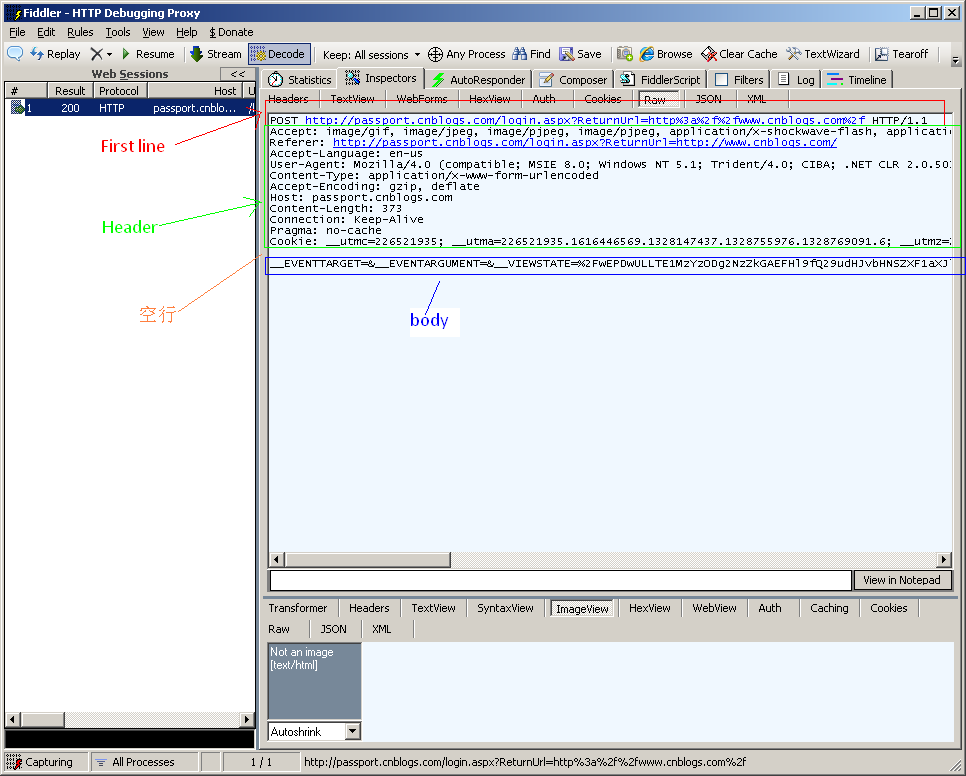
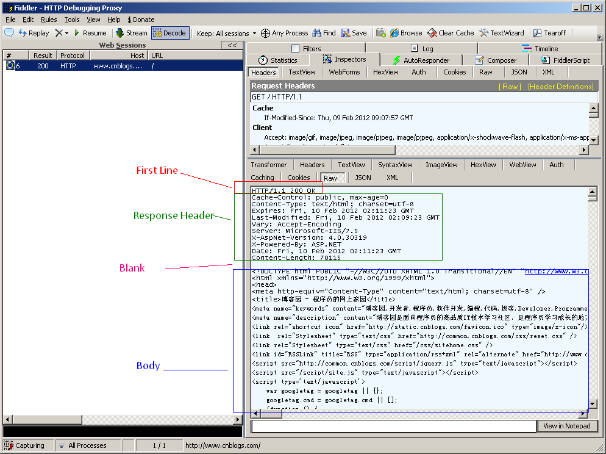
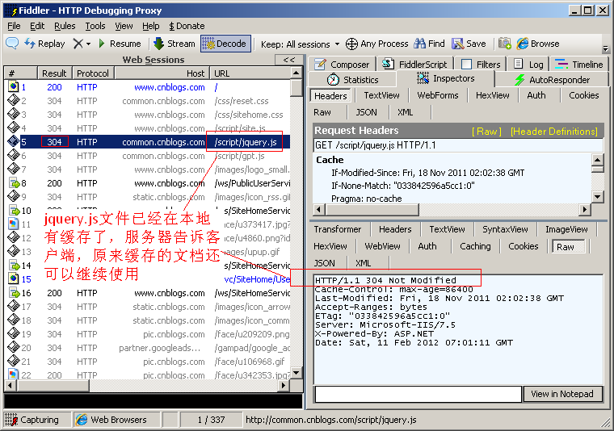

什么是HTTP协议
协议是指计算机通信网络中两台计算机之间进行通信所必须共同遵守的规定或规则，超文本传输协议(HTTP)是一种通信协议，它允许将超文本标记语言(HTML)文档从Web服务器传送到客户端的浏览器目前我们使用的是HTTP/1.1版本
Web服务器，浏览器，代理服务器
当我们打开浏览器，在地址栏中输入URL，然后我们就看到了网页。 原理是怎样的呢？
实际上我们输入URL后，我们的浏览器给Web服务器发送了一个Request, Web服务器接到Request后进行处理，生成相应的Response，然后发送给浏览器， 浏览器解析Response中的HTML,这样我们就看到了网页，过程如下图所示
我们的Request 有可能是经过了代理服务器，最后才到达Web服务器的。过程如下图所示
代理服务器就是网络信息的中转站，有什么功能呢？
- 提高访问速度， 大多数的代理服务器都有缓存功能。
- 突破限制， 也就是翻墙了
- 隐藏身份。
URL详解
URL(Uniform Resource Locator) 地址用于描述一个网络上的资源，基本格式如下
1 | schema://host[:port#]/path/.../[;url-params][?query-string][#anchor] |
- scheme:指定低层使用的协议(例如：http, https, ftp)
- host:HTTP服务器的IP地址或者域名
- port:HTTP服务器的默认端口是80，这种情况下端口号可以省略。如果使用了别的端口，必须指明，例如 http://www.cnblogs.com:8080/
- path:访问资源的路径
- url-params:附加参数
- query-string:发送给http服务器的数据
- anchor:锚
URL 的一个例子1
2
3
4
5
6
7http://www.mywebsite.com/sj/test;id=8079?name=sviergn&x=true#stuff
Schema: http
host: www.mywebsite.com
path: /sj/test
URL params: id=8079
Query String: name=sviergn&x=true
Anchor: stuff
HTTP协议是无状态的
http协议是无状态的，同一个客户端的这次请求和上次请求是没有对应关系，对http服务器来说，它并不知道这两个请求来自同一个客户端。 为了解决这个问题， Web程序引入了Cookie机制来维护状态.
HTTP消息的结构
先看Request 消息的结构，Request消息分为3部分，第一部分叫请求行（单行字符串）， 第二部分叫http header，（由很多字符串键值对组成），第三部分是body，header和body之间有个空行。
结构如下图
第一行中的Method表示请求方法，比如”POST”，”GET”， Path-to-resoure表示请求的资源， Http/version-number 表示HTTP协议的版本号当使用的是”GET” 方法的时候， body是为空的，比如我们打开博客园首页的request 如下1
2GET http://www.cnblogs.com/ HTTP/1.1
Host: www.cnblogs.com
我们用Fiddler 捕捉一个博客园登录的Request 然后分析下它的结构， 在Inspectors tab下以Raw的方式可以看到完整的Request的消息，如下图

我们再看Response消息的结构，和Request消息的结构基本一样。 同样也分为三部分，第一部分叫request line，第二部分叫request header，第三部分是body. header和body之间也有个空行，结构如下图
HTTP/version-number表示HTTP协议的版本号，status-code 和message 请看下节[状态代码]的详细解释。
我们用Fiddler 捕捉一个博客园首页的Response然后分析下它的结构， 在Inspectors tab下以Raw的方式可以看到完整的Response的消息，如下图

Get和Post方法的区别
Http协议定义了很多与服务器交互的方法，最基本的有4种，分别是GET,POST,PUT,DELETE. 一个URL地址用于描述一个网络上的资源，而HTTP中的GET, POST, PUT, DELETE就对应着对这个资源的查，改，增，删4个操作。 我们最常见的就是GET和POST了。GET一般用于获取/查询资源信息，而POST一般用于更新资源信息.
我们看看GET和POST的区别
- GET提交的数据会放在URL之后，以?分割URL和传输数据，参数之间以&相连，如EditPosts.aspx?name=test1&id=123456. POST方法是把提交的数据放在HTTP包的Body中.
- GET提交的数据大小有限制（因为浏览器对URL的长度有限制），而POST方法提交的数据没有限制.
- GET方式需要使用Request.QueryString来取得变量的值，而POST方式通过Request.Form来获取变量的值。
- GET方式提交数据，会带来安全问题，比如一个登录页面，通过GET方式提交数据时，用户名和密码将出现在URL上，如果页面可以被缓存或者其他人可以访问这台机器，就可以从历史记录获得该用户的账号和密码。
状态码
Response 消息中的第一行叫做状态行，由HTTP协议版本号， 状态码， 状态消息 三部分组成。
状态码用来告诉HTTP客户端，HTTP服务器是否产生了预期的Response.
HTTP/1.1中定义了5类状态码， 状态码由三位数字组成，第一个数字定义了响应的类别
- 1XX 提示信息 - 表示请求已被成功接收，继续处理
- 2XX 成功 - 表示请求已被成功接收，理解，接受
- 3XX 重定向 - 要完成请求必须进行更进一步的处理
- 4XX 客户端错误 - 请求有语法错误或请求无法实现
- 5XX 服务器端错误 - 服务器未能实现合法的请求
看看一些常见的状态码200 OK
最常见的就是成功响应状态码200了， 这表明该请求被成功地完成，所请求的资源发送回客户端，如下图，打开博客园首页
302 Found
重定向，新的URL会在response中的Location中返回，浏览器将会使用新的URL发出新的Request。
例如在IE中输入http://www.google.com. HTTP服务器会返回304， IE取到Response中Location header的新URL, 又重新发送了一个Request.
304 Not Modified
代表上次的文档已经被缓存了， 还可以继续使用，
例如打开博客园首页， 发现很多 Response 的status code 都是304

提示： 如果你不想使用本地缓存可以用Ctrl+F5强制刷新页面
400 Bad Request 客户端请求与语法错误，不能被服务器所理解
403 Forbidden 服务器收到请求，但是拒绝提供服务
404 Not Found
请求资源不存在（输错了URL）
比如在IE中输入一个错误的URL， http://www.cnblogs.com/tesdf.aspx
500 Internal Server Error 服务器发生了不可预期的错误
503 Server Unavailable 服务器当前不能处理客户端的请求，一段时间后可能恢复正常
HTTP Request header
使用Fiddler 能很方便的查看Reques header, 点击Inspectors tab -> Request tab -> headers 如下图所示.
header 有很多，比较难以记忆，我们也按照Fiddler那样把header 进行分类，这样比较清晰也容易记忆。
Cache 头域
If-Modified-Since
作用： 把浏览器端缓存页面的最后修改时间发送到服务器去，服务器会把这个时间与服务器上实际文件的最后修改时间进行对比。如果时间一致，那么返回304，客户端就直接使用本地缓存文件。如果时间不一致，就会返回200和新的文件内容。客户端接到之后，会丢弃旧文件，把新文件缓存起来，并显示在浏览器中。
例如：If-Modified-Since: Thu, 09 Feb 2012 09:07:57 GMT
实例如下图
If-None-Match
作用: If-None-Match和ETag一起工作，工作原理是在HTTP Response中添加ETag信息。 当用户再次请求该资源时，将在HTTP Request 中加入If-None-Match信息(ETag的值)。如果服务器验证资源的ETag没有改变（该资源没有更新），将返回一个304状态告诉客户端使用本地缓存文件。否则将返回200状态和新的资源和Etag. 使用这样的机制将提高网站的性能
例如: If-None-Match: “03f2b33c0bfcc1:0”
实例如下图
Pragma
作用： 防止页面被缓存， 在HTTP/1.1版本中，它和Cache-Control:no-cache作用一模一样
Pargma只有一个用法， 例如： Pragma: no-cache
注意: 在HTTP/1.0版本中，只实现了Pragema:no-cache, 没有实现Cache-Control
Cache-Control
作用: 这个是非常重要的规则。 这个用来指定Response-Request遵循的缓存机制。各个指令含义如下
- Cache-Control:Public 可以被任何缓存所缓存（）
- Cache-Control:Private 内容只缓存到私有缓存中
- Cache-Control:no-cache 所有内容都不会被缓存
还有其他的一些用法， 我没搞懂其中的意思， 请大家参考其他的资料
Client 头域
Accept
作用： 浏览器端可以接受的媒体类型,
例如： Accept: text/html 代表浏览器可以接受服务器回发的类型为 text/html 也就是我们常说的html文档,
如果服务器无法返回text/html类型的数据，服务器应该返回一个406错误(non acceptable)
通配符 代表任意类型
例如 Accept: /* 代表浏览器可以处理所有类型，(一般浏览器发给服务器都是发这个)Accept-Encoding：
作用： 浏览器申明自己接收的编码方法，通常指定压缩方法，是否支持压缩，支持什么压缩方法（gzip，deflate），（注意：这不是只字符编码）;
例如： Accept-Encoding: gzip, deflateAccept-Language
作用： 浏览器申明自己接收的语言。
语言跟字符集的区别：中文是语言，中文有多种字符集，比如big5，gb2312，gbk等等；
例如： Accept-Language: en-usUser-Agent
作用：告诉HTTP服务器， 客户端使用的操作系统和浏览器的名称和版本.
我们上网登陆论坛的时候，往往会看到一些欢迎信息，其中列出了你的操作系统的名称和版本，你所使用的浏览器的名称和版本，这往往让很多人感到很神奇，实际上，服务器应用程序就是从User-Agent这个请求报头域中获取到这些信息User-Agent请求报头域允许客户端将它的操作系统、浏览器和其它属性告诉服务器。
例如： User-Agent: Mozilla/4.0 (compatible; MSIE 8.0; Windows NT 5.1; Trident/4.0; CIBA; .NET CLR 2.0.50727; .NET CLR 3.0.4506.2152; .NET CLR 3.5.30729; .NET4.0C; InfoPath.2; .NET4.0E)Accept-Charset
作用：浏览器申明自己接收的字符集，这就是本文前面介绍的各种字符集和字符编码，如gb2312，utf-8（通常我们说Charset包括了相应的字符编码方案）；
Cookie/Login 头域
- Cookie:
作用： 最重要的header, 将cookie的值发送给HTTP 服务器
Entity头域
Content-Length
作用：发送给HTTP服务器数据的长度。
例如： Content-Length: 38Content-Type
作用：
例如：Content-Type: application/x-www-form-urlencoded
Miscellaneous 头域
- Referer:
作用： 提供了Request的上下文信息的服务器，告诉服务器我是从哪个链接过来的，比如从我主页上链接到一个朋友那里，他的服务器就能够从HTTP Referer中统计出每天有多少用户点击我主页上的链接访问他的网站。
例如: Referer:http://translate.google.cn/?hl=zh-cn&tab=wT
Transport 头域
Connection
例如： Connection: keep-alive 当一个网页打开完成后，客户端和服务器之间用于传输HTTP数据的TCP连接不会关闭，如果客户端再次访问这个服务器上的网页，会继续使用这一条已经建立的连接
例如： Connection: close 代表一个Request完成后，客户端和服务器之间用于传输HTTP数据的TCP连接会关闭， 当客户端再次发送Request，需要重新建立TCP连接。Host（发送请求时，该报头域是必需的）
作用: 请求报头域主要用于指定被请求资源的Internet主机和端口号，它通常从HTTP URL中提取出来的
例如: 我们在浏览器中输入：http://www.guet.edu.cn/index.html
浏览器发送的请求消息中，就会包含Host请求报头域，如下：
Host：http://www.guet.edu.cn
此处使用缺省端口号80，若指定了端口号，则变成：Host：指定端口号
HTTP Response header
- 同样使用Fiddler 查看Response header, 点击Inspectors tab ->Response tab-> headers 我们也按照Fiddler那样把header 进行分类，这样比较清晰也容易记忆。如下图所示
Cache头域
- Date
作用: 生成消息的具体时间和日期
例如： Date: Sat, 11 Feb 2012 11:35:14 GMT - Expires
作用: 浏览器会在指定过期时间内使用本地缓存
例如: Expires: Tue, 08 Feb 2022 11:35:14 GMT - Vary
作用：
例如: Vary: Accept-Encoding
Cookie/Login 头域
- P3P
作用: 用于跨域设置Cookie, 这样可以解决iframe跨域访问cookie的问题
例如: P3P: CP=CURa ADMa DEVa PSAo PSDo OUR BUS UNI PUR INT DEM STA PRE COM NAV OTC NOI DSP COR - Set-Cookie
作用： 非常重要的header, 用于把cookie 发送到客户端浏览器， 每一个写入cookie都会生成一个Set-Cookie.
例如: Set-Cookie: sc=4c31523a; path=/; domain=.acookie.taobao.com
Entity头域
- ETag
作用: 和If-None-Match 配合使用。 （实例请看上节中If-None-Match的实例）
例如: ETag: “03f2b33c0bfcc1:0” - Last-Modified:
作用： 用于指示资源的最后修改日期和时间。（实例请看上节的If-Modified-Since的实例）
例如: Last-Modified: Wed, 21 Dec 2011 09:09:10 GMT - Content-Type
作用：WEB服务器告诉浏览器自己响应的对象的类型和字符集,
例如:
Content-Type: text/html; charset=utf-8
Content-Type:text/html;charset=GB2312
Content-Type: image/jpeg - Content-Length
指明实体正文的长度，以字节方式存储的十进制数字来表示。在数据下行的过程中，Content-Length的方式要预先在服务器中缓存所有数据，然后所有数据再一股脑儿地发给客户端。
例如: Content-Length: 19847 - Content-Encoding
WEB服务器表明自己使用了什么压缩方法（gzip，deflate）压缩响应中的对象。
例如：Content-Encoding：gzip - Content-Language
作用： WEB服务器告诉浏览器自己响应的对象的语言者
例如： Content-Language:da
Miscellaneous 头域
- Server:
作用：指明HTTP服务器的软件信息
例如:Server: Microsoft-IIS/7.5 - X-AspNet-Version:
作用：如果网站是用ASP.NET开发的，这个header用来表示ASP.NET的版本
例如: X-AspNet-Version: 4.0.30319 - X-Powered-By:
作用：表示网站是用什么技术开发的
例如： X-Powered-By: ASP.NET
Transport头域
- Connection
例如： Connection: keep-alive 当一个网页打开完成后，客户端和服务器之间用于传输HTTP数据的TCP连接不会关闭，如果客户端再次访问这个服务器上的网页，会继续使用这一条已经建立的连接
例如： Connection: close 代表一个Request完成后，客户端和服务器之间用于传输HTTP数据的TCP连接会关闭， 当客户端再次发送Request，需要重新建立TCP连接。
Location头域
- Location
作用： 用于重定向一个新的位置， 包含新的URL地址
实例请看304状态实例
HTTP协议是无状态的和Connection: keep-alive的区别
无状态是指协议对于事务处理没有记忆能力，服务器不知道客户端是什么状态。从另一方面讲，打开一个服务器上的网页和你之前打开这个服务器上的网页之间没有任何联系。
HTTP是一个无状态的面向连接的协议，无状态不代表HTTP不能保持TCP连接，更不能代表HTTP使用的是UDP协议（无连接）。
从HTTP/1.1起，默认都开启了Keep-Alive，保持连接特性，简单地说，当一个网页打开完成后，客户端和服务器之间用于传输HTTP数据的TCP连接不会关闭，如果客户端再次访问这个服务器上的网页，会继续使用这一条已经建立的连接。
Keep-Alive不会永久保持连接，它有一个保持时间，可以在不同的服务器软件（如Apache）中设定这个时间。